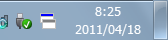
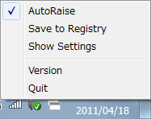

TTXMouse は Windows のタスクトレイに常駐し、 X-Mouse の設定を容易にするユーティリティです。
TTXMouse を起動すると、タスクトレイに『2つの重なったウィンドウ』のアイコンが表示されます。

X-Mouse が無効のときは、『2つの重なったウィンドウ』の上に赤い×印が付いたアイコンとなります。
タスクトレイのアイコンを左クリックすると X-Mouse の有効/無効が切り替わります。
タスクトレイのアイコンを右クリックするとメニューが表示されます。

| AutoRaise | フォーカス移動時にウィンドウを最前面へ移動する設定を切り替えます。左側にチェックボックスが表示されているとき有効です。 |
| Save to Registry | X-Mouse 及び AutoRaise の設定をレジストリに保存します。 |
| Show Settings | X-Mouse 、 AutoRaise 及びフォーカス移動の Delay について、現在の設定とレジストリに保存されている設定を表示します。 |
| Version | TTXMouse のバージョンを表示します。 |
| Quit | TTXMouse を終了します。 |
いずれも 32bit 版のみ
| 日付 | バージョン | 変更点 |
|---|---|---|
| 2012年 03月 31日 | 1.0.1 | Active window tracking delay の取得を追加 |
| 2011年 04月 17日 | 1.0.0 | 初回リリース |
ソースコードはインストーラに含まれており、インストール先 (標準では C:\Program Files\TTXMouse\) の Project\ 以下に配置されます。
また、最新版のソースコードは GitHub でも公開しています。
ビルド環境は Visual C++ 2010 Express です。